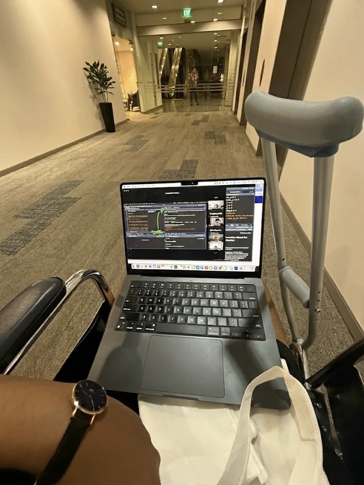

Revision Log
Documented Feedback, Responses & Version History
This log documents all substantive feedback received on the project, the team’s response to each point, and the version in which it was addressed. Entries are grouped by feedback round and ordered chronologically.
Status tags: 🟢 Resolved · 🟡 In Progress · ⚪ Acknowledged / By design
Version History
| Version | Date | Summary of changes |
|---|---|---|
| v0.1 | July 2025 | Initial proposal — NBA + NCAA data, binary injured_achilles classifier, random 80/20 split, RF + XGB with SMOTE/ROSE/ADASYN |
| v0.2 | July 2025 | Added NCAA Achilles injury data (21 cases manually compiled); structured project into two explicit angles: DiD causal inference + ML classification · 📄 Original Submission |
| v1.0 | September 2025 | Pivoted target to pct_games_missed (continuous regression); dropped NCAA; temporal train/test split (2018–2021 / 2022–2025); hurdle model explored |
| v1.1 | November 2025 | Removed survivorship-biased features (total_minutes, back_to_back_games, avg_days_rest); retained lagged avg_rolling_minutes_3 only |
| v1.2 | November 2025 | Dropped hurdle model (Stage A uninformative at ~87–94% non-zero rate); pivoted to direct XGBoost regression |
| v1.3 | December 2025 | Fixed data leakage (temporal feature discipline, hoopR season_type == 2 bug); restricted to Regular Season only |
| v2.0 | April 2026 | Final model deployed — R² = 0.747, RMSE = 0.133, MAE = 0.100; Quarto website + Shiny dashboard published |
Round 1 — Initial Ideation Feedback
Feedback 1.1 — Too few injury cases; broaden scope
Status: 🟢 Resolved in v0.2
Feedback received:
Professor challenged whether 45 NBA Achilles ruptures across a 30-year window was sufficient to learn meaningful patterns. With an ~0.8% positive class rate, even the best class-balancing techniques (SMOTE, ROSE, ADASYN) would essentially be amplifying noise rather than signal — and cross-validation folds would routinely contain zero positive examples.
Our response:
We broadened the dataset in two ways. First, we manually compiled 21 NCAA Achilles rupture cases (2008–2025) from ESPN, CBS Sports, Yahoo Sports, and official team sources, giving us a combined 66 confirmed rupture cases. Second, we restructured the project into two explicit analytical angles to avoid conflating them:
- Causal inference (
β̂): A difference-in-differences model investigating whether high load and back-to-back scheduling have a measurable treatment effect on injury rates. - Predictive modelling (
ŷ): A supervised classification framework (RF + XGBoost) to flag individual players at elevated risk.
This separation was also the supervisor’s second point of feedback — see 1.2 below.
Code change: Capstone_Vickraman_Tan_Said_FINAL.R → NCAA data import and merge section; DiD model block (model1, model2).
Feedback 1.2 — Clarify the two analytical angles
Status: 🟢 Resolved in v0.2
Feedback received:
Professor noted that the project was implicitly trying to answer two different questions — why ruptures happen (causal) and who is next (predictive) — but the framing in the proposal did not distinguish between them clearly. The ask was: “If you want both angles, fine, but be explicit about which is which and what each can and cannot claim.”
Our response:
We formally separated the project into two parts with distinct methodological framing:
- Part 1 (Causal): A difference-in-differences design using season-level NBA data, comparing high-load vs. low-load player-seasons before and after a treatment period. We explicitly disclaim that the DiD estimate is a first-pass approximation; the parallel trends assumption is imperfect given the rarity of the outcome, and a synthetic control would be more robust in future work.
- Part 2 (Predictive): A supervised ML pipeline (RF + XGBoost) that produces player-level risk scores. We are clear that this is risk prediction, not causal attribution — the model says who, not why.
Code change: Project restructured into Part1_Causal.R and Part2_Predictive.R; website pages part1_causal.qmd and part2_predictive.qmd correspond directly to the two angles.
Round 2 — Submission Feedback
Feedback 2.1 — Rare event economics: false positives are too costly
Status: 🟢 Resolved in v1.0
Feedback received:
This was the pivotal feedback that redirected the entire Part 2 pipeline. The supervisor’s concern was not just statistical (class imbalance) but economic: in the NBA context, a False Positive — predicting a player will rupture their Achilles when they will not — has a prohibitively high cost. Benching a star player unnecessarily costs wins, affects salary negotiations, and erodes trust in the model. A binary classifier with a 0.8% positive class cannot produce False Positive rates that are operationally acceptable, regardless of threshold tuning.
The ask was to rethink the target variable entirely: “What information would actually be actionable for a coach or GM?”
Our response:
We pivoted the target from a binary Achilles flag to pct_games_missed — a continuous measure computed as:
pct_games_missed = games_missed / games_on_rosterThis reframe resolved several problems simultaneously:
- No class imbalance: Regression on a continuous [0, 1] target eliminates the rare-event problem structurally, not through sampling.
- Actionable at any threshold: A GM can apply their own risk tolerance. Predicting 25% games missed is meaningfully different from 5% without forcing a binary alarm.
- Broader injury spectrum:
pct_games_missedcaptures all load-related absences (tendinitis, hamstrings, knee inflammation) — injuries sharing the same upstream risk factors as Achilles ruptures. - Avoids survivorship on the outcome side: Games missed is observable from roster records even when a player appears in no box scores.
We also dropped NCAA data at this stage. Computing pct_games_missed requires game-level roster records that the Kaggle NCAA dataset (which is season-level only) cannot provide.
Code change: 00_Data_Setup.R → target construction block; Part2_Predictive.R → recipe, model spec, and metric suite updated from roc_auc/accuracy to rmse/mae/rsq.
Feedback 2.2 — Address data leakage and temporal integrity
Status: 🟢 Resolved in v1.3
Feedback received:
A deeper review of the feature engineering pipeline surfaced several sources of implicit data leakage — cases where the model had access to information that would not exist at prediction time in a real deployment.
Our response:
We identified and fixed three leakage sources:
1. Contemporaneous features used as predictors
ever_injured and cum_achilles_injuries were constructed from the full injury history, including future observations within the dataset window. All cumulative and rolling features are now strictly lagged — they only aggregate data from prior time periods.
2. Random train/test split
An 80/20 random split allows future seasons to appear in the training set, making the model optimistically overfit to temporal patterns it would not have at deployment. We replaced this with a temporal split:
- Train: 2018–2021
- Test: 2022–2025
This honestly simulates real-world deployment: predict next-season risk from prior seasons.
3. hoopR season_type is numeric, not a string
season_type == 2 means Regular Season in hoopR’s API. Filtering with season_type == "Regular Season" silently returned 0 rows — a critical bug that went undetected until we cross-checked row counts. We restricted the dataset to Regular Season only (season_type == 2) to eliminate playoff confounding.
Code change: 00_Data_Setup.R → feature engineering block (all lag() wrappers); Part2_Predictive.R → replaced initial_split() with manual temporal filter; season_type filter corrected throughout.
Iterative Self-Revisions (Part 2 Pipeline)
These revisions were self-initiated after committing to pct_games_missed. They emerged from interrogating model behaviour and feature importance outputs rather than from direct supervisor feedback.
Revision A — Survivorship bias in load features
Status: 🟢 Resolved in v1.1
Problem identified:
Our initial feature set included total_minutes, back_to_back_games, and avg_days_rest as load proxies. These all suffer from the same survivorship bias paradox: healthy players play more, so these values are naturally higher for players who do not get injured. When regressed against pct_games_missed, the model learned a perverse negative relationship — more minutes predicted fewer missed games — which is exactly backwards from our hypothesis and is an artefact of the data generating process.
What we changed:
Removed all three contemporaneous load features. Retained only:
avg_rolling_minutes_3: average minutes played in the 3 games prior to any given observation, lagged by one period. This captures pre-injury workload without contaminating the signal with same-period playing time that is mechanically high for healthy players.
| Feature | Action | Reason |
|---|---|---|
total_minutes |
Removed | Survivorship-biased |
back_to_back_games |
Removed | Survivorship-biased |
avg_days_rest |
Removed | Injured players “rest” more because they’re inactive |
avg_rolling_minutes_3 |
Retained (lagged) | Pre-injury load proxy; uses only prior-period data |
Code change: 00_Data_Setup.R → create_features() function; Part2_Predictive.R → recipe step_rm() updated.
Revision B — Dropping the hurdle model
Status: 🟢 Resolved in v1.2
Problem identified:
After moving to pct_games_missed, we initially adopted a two-stage hurdle model:
- Stage A (Classification): Does this player miss any games? (binary)
- Stage B (Regression): Given they miss games, what percentage? (continuous)
The motivation was that pct_games_missed is zero-inflated — many player-seasons have zero missed games. A hurdle model seemed statistically principled.
In practice, Stage A was uninformative. Approximately 87–94% of player-seasons had pct_games_missed > 0, meaning the zero hurdle was almost never triggered. Stage A learned to predict the majority class with high confidence and contributed nothing beyond what a direct regression model already captured. Adding it introduced substantial pipeline complexity (two separate model specs, two workflows, a prediction assembly step) for no performance gain.
What we changed:
Dropped the hurdle architecture entirely. Replaced with a single XGBoost regression model trained directly on pct_games_missed. This simplified the pipeline and improved interpretability.
| Architecture | Verdict |
|---|---|
| Hurdle (Stage A classify → Stage B regress) | Dropped — Stage A uninformative at ~87–94% non-zero rate |
| Direct XGBoost regression | Adopted — cleaner, faster, better R² |
Code change: Part2_Predictive.R → removed Part2_Predictive_Hurdle.R dependency; single xgb_workflow fitted directly.
Self-Identified Limitations
Limitations the team identified independently — not raised by the supervisor — documented for transparency.
L1 — Scope of pct_games_missed
Status: ⚪ Acknowledged / By design
pct_games_missed captures all absence reasons — including rest decisions and suspensions — not only injury-related absences. We document this explicitly in the Part 2 methodology section. The Achilles spike motivates the research question; the model answers it across the full spectrum of load-related unavailability. This is a deliberate design choice that trades specificity for tractability.
L2 — No biomechanical or training load data
Status: ⚪ Acknowledged / Out of scope
Tendon stiffness, landing mechanics, and fatigue-induced movement compensations are among the strongest known predictors of Achilles ruptures [@Petway2022] but are not captured in publicly available box score data. Our features are proxies. The NBA does collect this data internally (via second-spectrum tracking and wearables), but it is not publicly accessible. This is noted in the limitations sections of both the website and the submission draft.
L3 — hoopR data reliability before 2018
Status: 🟢 Resolved in v1.3 (restriction applied)
hoopR coverage before the 2018 season produces artificially low pct_games_missed values, likely due to incomplete roster transaction records in earlier API data. We restricted the full pipeline to 2018–2025 to ensure target variable integrity. Earlier seasons are retained in visualisations only (the injury spike charts) where they serve a descriptive rather than modelling role.
L4 — No positional adjustment
Status: 🟡 In Progress — planned for future work
A centre and a point guard face different Achilles risk profiles at the same minute load, due to differences in movement patterns, jump frequency, and court positioning. Player position is not currently included as a feature. Adding athlete_position_abbreviation as a categorical variable in the recipe (via step_dummy()) is straightforward and is noted as a meaningful next step.
Reflection
When everyone else chose safer, more predictable capstone topics, I chose this one. Partly because sports analytics has been a lifelong goal — but also because of something more personal.
The day I joined the cdaR class, I tore my extensor digitorum longus playing handball— a sport I love. In and out of MRI scans during our first session. Reading about Achilles ruptures in the news while navigating my own injury, on top of job rejections and university setbacks that year. The question that kept surfacing was simple: could I have seen this coming?

Gathering my own sports data was difficult and costly — but what if I tried it on NBA players instead? That was the seed of this entire study. It also reflected something Prof said early on — about taking control not just in our professional lives, but using data to guide our personal ones too. I wasn’t going to do a project I knew would work off the cuff. It had to be slightly impossible. Rare cases, sparse data, a problem the literature hadn’t cleanly solved. That was the point.
The most significant revision was the pivot from a binary Achilles injury classifier to pct_games_missed as a continuous regression target. What began as a statistical fix for class imbalance turned out to be a fundamental reframing of the research question — from “did this player rupture their Achilles?” to “how available is this player likely to be?” That shift made the model genuinely more useful to a coaching or front-office audience, and it resolved the rare-event problem structurally rather than by papering over it with resampling. I think I fell in love with my model. Well I mean— “there you go”. I learn, I learn.
If I were starting again, I would build the target variable first and work backwards to the feature set, rather than inheriting features designed for binary classification and retrofitting them to a regression task. The survivorship bias in load features — where total_minutes perversely negatively predicted missed games — was a direct consequence of that mismatch, and it cost significant debugging time. Too much of a perfectionist with too many changes along the way.
The finding that surprised me most was how uninformative Stage A of the hurdle model turned out to be. Zero-inflated data is a textbook motivation for hurdle models — but in our data the “zero” class was rare enough (~6–13% of player-seasons) that the hurdle added complexity without signal. Sometimes the principled statistical solution and the practically correct one diverge. Interrogating model behaviour, rather than deferring to methodological convention, is what surfaced that. And learning when to reframe — rather than force a technique that wasn’t working — turned out to be the most important lesson of all.
References
Petway, A. J., Jordan, M. J., Epsley, S., & Anloague, P. A. (2022). Mechanisms of Achilles tendon rupture in National Basketball Association players. Journal of Applied Biomechanics, 38(6), 398–403. https://doi.org/10.1123/jab.2022-0088